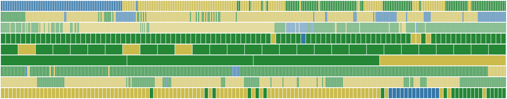
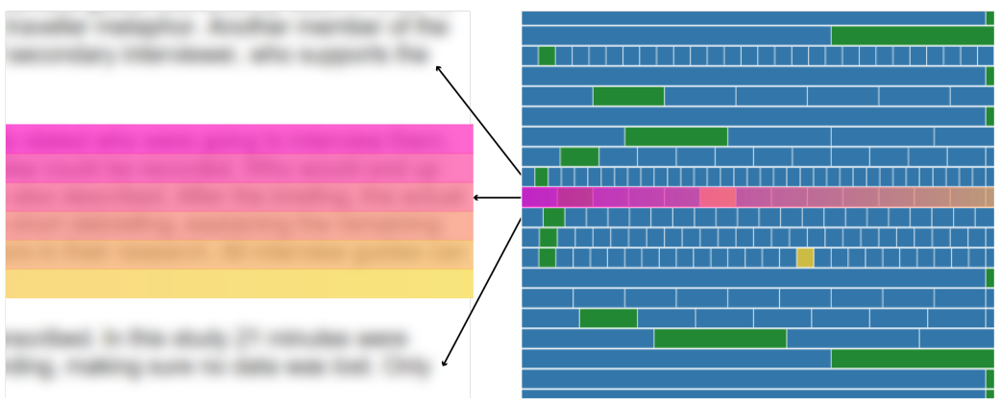
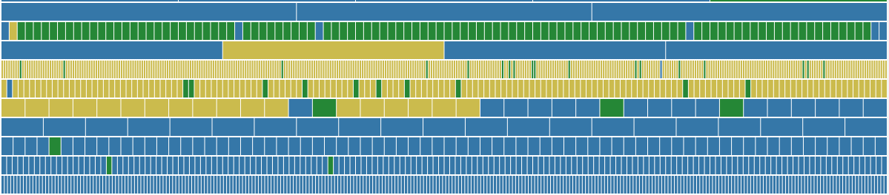
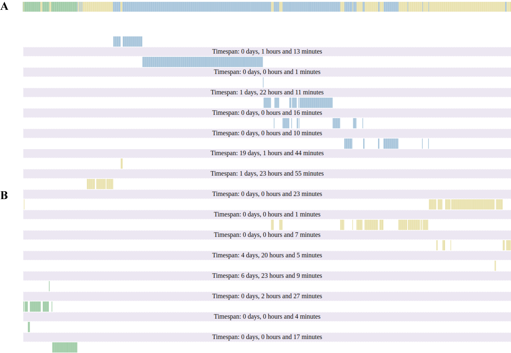

Visualizing Collaborative Writing Patterns
What can we learn about collaboration and collaborative writing from visualizing document revisions?

We can learn a lot, it turns out. In this research project, I developed a series of visualizations of document revisions to support qualitative interviews and analysis related to collaborative writing, approches, division of labour and contributions to a shared text.
We interviewed multiple groups of people writing together and got access to their shared document. From there, we downloaded the revisions and analyzed them using tools (scripts) developed for the task.
The main focus of the visualizations was to identify where in the document authors worked and when in relation to the work of their co-authors. We hypothesized that authors divided the writing into tasks centered around particular sections in the document, e.g. being responsible for a specific section. What we call “territories” in the research publication.
To inform this hypotheses and identify territories and collaborative writing patterns (hand-over, edits etc.), we analyzed Google Document text revisions. These consist of one insert or remove operation with n characters. Google Document text operations are chronological, so the main challenge is to analyse the revisions in terms of where they are in the document.
Insights
The visualizations helped us identify a few interesting patterns on how co-authors write together over time. These correlate with the themes from the qualitative interviews, see Larsen-Ledet & Korsgaard (2019). Figure Figure 1 show how to read the visualizations. Each line in the visualizations corresponds to a paragraph in the text and the order the spatial/indexical order of the edits. For some paragraphs, we only see a few blocks, e.g. one for a copy-paste, whereas for other we see significantly more edits (both characters currently in the paragraph and deleted character).

First, we observed the territories hypothesized in the research. Figure Figure 2 show how several authors (blue, yellow and green) work in different parts of a larger document, with few edits in the blocks of the co-authors.

Second, we observed that collaborative writing often means people divide the sections and do the bulk of the writing in their part of the document. When writing in other people’s paragraphs, the visualization show that this is typically smaller edits (typos, wording etc.) and/or transitions between different paragraphs. Figure Figure 3 illustrate this with a lot of small fragmented edits and transition edits in the beginning or end of the paragraph (see e.g. the second line in figure Figure 3).
Third, the visualizations helped us to identify the temporal patterns of collaborative writing. Figure Figure 4 show how two collaborators – author A and author B – write together. A started writing, then added a few bits here and there, and then B take over and adds text in the middle and end of the paragraph (and then later C – green joins and add text in the beginning).

Publication
The work and visualizations are primary research instruments to answer a research questions. The work is available in our paper on “Territorial Functioning in Collaborative Writing”.
My main contribution to the work was developing the analysis and visualizations of the Google Document revisions.
I have considered further developing this work toward a tool, but the incentives are a bit absent at the moment.